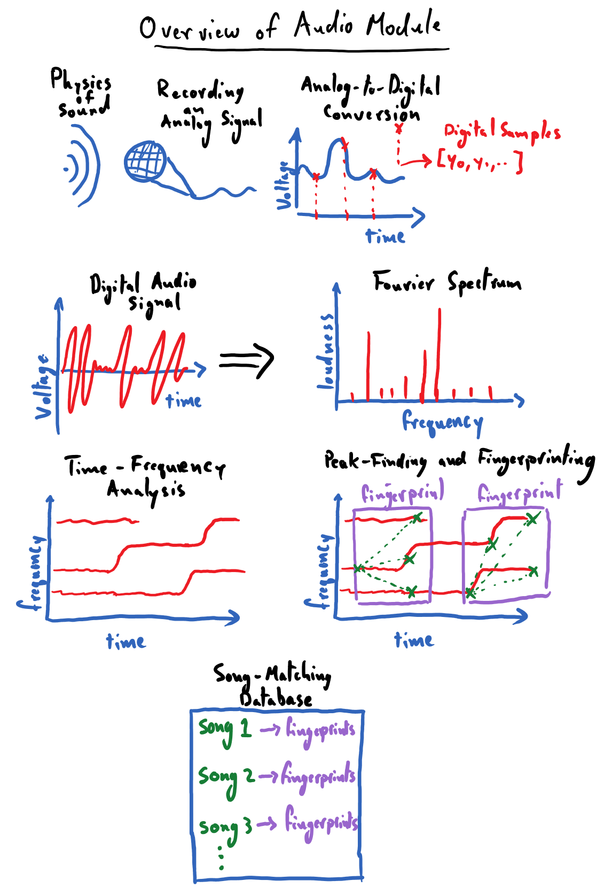

Audio Module¶
Nowadays, most phones come with software that lets them do a pretty neat trick: if you’re out and about and some music catches your ear, you can hold your phone up in the air and ask it to name that tune! Your phone is able to do this even though there are millions of songs out there and despite the loud chatter of your friends in the background. It manages to pinpoint the song being played after catching a whiff of it for mere seconds. This is an impressive trick indeed, but how in the world does it work?
The first module of the CogWorks course is all about working with audio data; it will give us all of the tools needed to code up our own song-recognition app from scratch! As is the CogWorks way, we will do our best to achieve this goal without relying on any “black boxes” in our solution. As such, we will begin from square one and discuss the question: what is sound and how do we record it? This will amount to a brief physics lesson in sound waves and microphones. Please note that these lessons do not require a background in physics, but hopefully they will spur an interest in the reader. We’ll follow this thread down the path of understanding the basics of digitizing an analog signal, which will give us insight into how audio files “store sounds” to be played back later.
With digitized audio data in hand, we’ll find ourselves with a real mess; in its raw form, it is hard to visually discern any salient qualities from an audio signal’s waveform besides stark changes in loudness. This sets the stage for the power house of signal processing: Fourier transforms. Critically, Fourier transforms will allow us to identify what notes (frequencies, to be more precise) are present in an audio recording. This will be a huge leap forward for us in our quest to create a song-recognition app: we can finally begin to characterize the distinguishing qualities of songs in a quantifiable way.
In order to extract identifiable features from songs, we will want to pinpoint the prominent frequencies (notes) of that song along with when those frequencies occur in the song. The process of distilling a frequency-time breakdown of our audio recording is known as spectrogram analysis. We will code up our own tooling to apply Fourier transforms over small temporal windows of audio data so that we can view spectrograms for our songs. A song’s spectrogram can reveal intuitive, and often unique, patterns – in it, we will be able to literally see the recurrence of the song’s chorus, the emergence of a loud guitar solo (or some Fortnite bass drop, or whatever youths listen to nowadays), and other key identifiable features. At this point, we will never have been closer to being able to “identify” a song based on reliable, quantifiable features.
Finally, we will need to figure out some heuristic for extracting a sparse set of identifiable features of a song – its “fingerprints” – that we can store in a database. This, as we’ll see, will boil down to locating the local maxima in a song’s spectrogram. Once populated with a library of songs, we can query this song-fingerprint database with a clip of a song and have it name the tune!
The following is a simple illustration of a road map for this module. Its purpose is to help us make note of the major landmarks that we will be encountering during our journey through the land of audio processing. I worked pretty hard on these drawings, please don’t make fun of them.

Contents:
- Prerequisites
- The Basics of Sound
- Exercises: Basics of Sound Waves
- Microphones: Recording Sound as an Analog Signal
- Digitizing an Analog Signal
- Exercises: Working with the Microphone
- Exercises: Analog to Digital Encoding
- Decomposing Audio Signals: Fourier Analysis
- The Discrete Fourier Transform (DFT)
- Exercises: Basics of DFTs
- Exercises: DFTs of Various Signals
- Exercises: Applications of DFTs
- Introduction to Spectrogram Analysis
- Exercise: Creating Our Own Spectrogram
- Matching Audio Recordings
- Exercises: Finding Local Peaks in a 2-D Array
- Capstone Project: Song Recognition